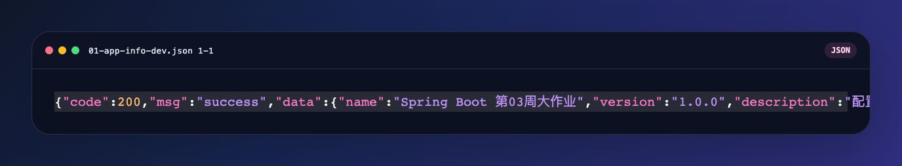
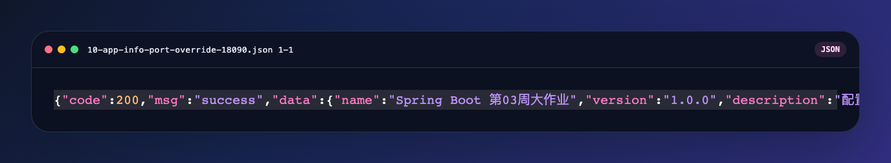
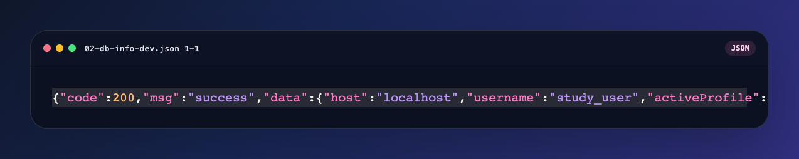
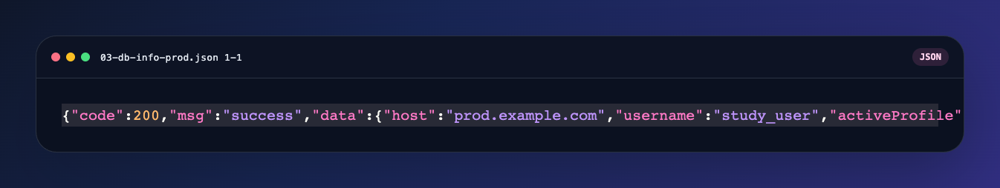
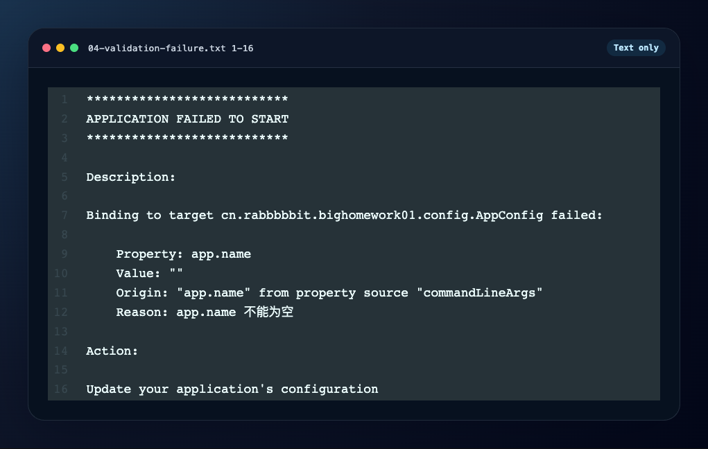
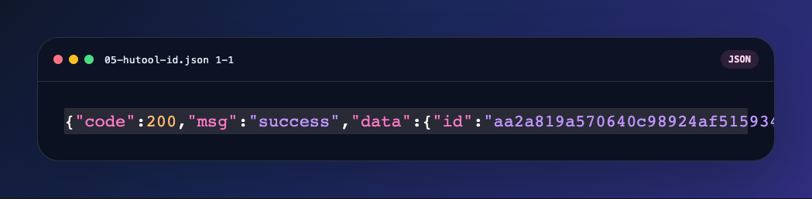
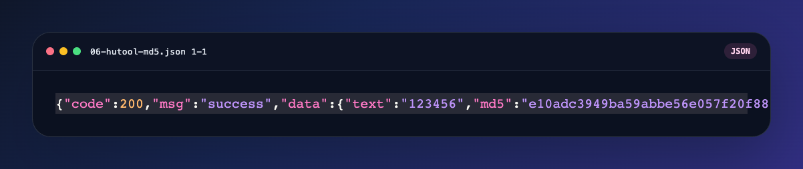
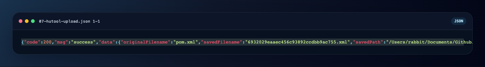
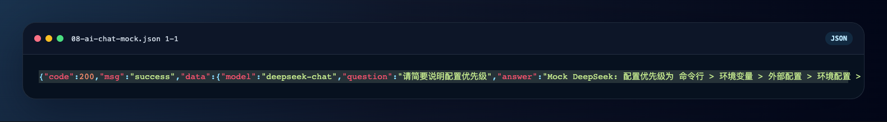
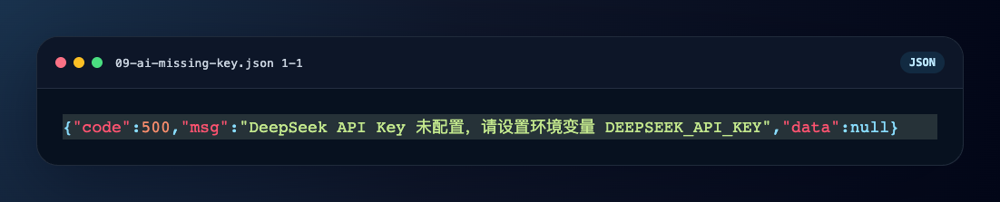

/Users/rabbit/Documents/Github/springboot-study/big-homework01Java 17、Spring Boot 3.5.12、Maven WrapperA1 A2 A3 A4 A7 A8 A9 A10 A11AppConfigappname / version / description / uploadDir / database.host / database.username / database.password@Validated + @NotBlank(message = "app.name 不能为空")GEThttp://127.0.0.1:8080/api/config/app-infoserver.port
响应示例：
{"code":200,"msg":"success","data":{"name":"Spring Boot 第03周大作业","version":"1.0.0","description":"配置管理与多环境管理综合练习项目","uploadDir":"uploads","database":{"host":"localhost","username":"study_user","password":"dev-password"},"serverPort":8080,"activeProfiles":["dev"]}}@Value("${server.port}")ConfigControllerPortOverrideTest2026-03-24 本机 9090 被 HBuilderX uni --platform h5 占用，因此手工演示改用 18090；自动化测试仍断言 9090 覆盖成功
java -jar target/big-homework01-0.0.1-SNAPSHOT.jarlocalhost
java -jar target/big-homework01-0.0.1-SNAPSHOT.jar --spring.profiles.active=prod --server.port=18081prod.example.com
响应示例：
{"code":200,"msg":"success","data":{"host":"prod.example.com","username":"study_user","activeProfile":"prod"}}java -jar target/big-homework01-0.0.1-SNAPSHOT.jar --app.name=
GEThttp://127.0.0.1:8080/api/hutool/id
GEThttp://127.0.0.1:8080/api/hutool/md5?text=123456e10adc3949ba59abbe56e057f20f883e
POSThttp://127.0.0.1:8080/api/hutool/uploadmultipart/form-data，字段名 filepom.xml
POSThttp://127.0.0.1:18082/api/unified/ai/chat{"question":"请简要说明配置优先级"}DEEPSEEK_API_KEY。本报告采用本地 mock DeepSeek 服务进行联调，验证配置读取、Hutool HTTP 调用和统一返回格式。

A1 配置优先级说明文档A2 命令行端口覆盖验证A3 生产环境数据库密码使用 ${DB_PASSWORD} 注入A4 生产环境敏感信息不写死，统一使用占位符或环境变量A7 UnifiedController 统一 AI 接口路径到 /api/unifiedA8 全局异常处理，统一 Result<T> 错误格式A9 使用 Hutool HTTP 模块调用 DeepSeek 风格接口A10 AI 地址、密钥、模型全部从配置读取A11 完整测试报告与 PDF执行命令：
./mvnw test结果：
15 个测试00本项目已完成作业要求的全部必做项，并补充了与 DeepSeek 路线对应的高价值加分项。代码、配置、测试与报告均可在 big-homework01 目录内独立复现。